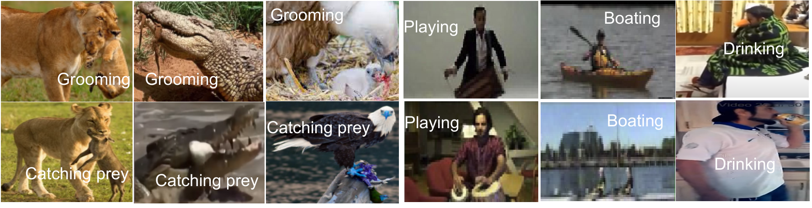
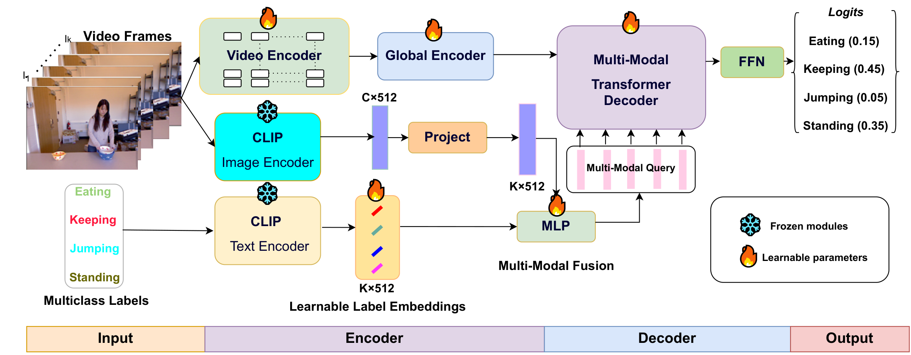
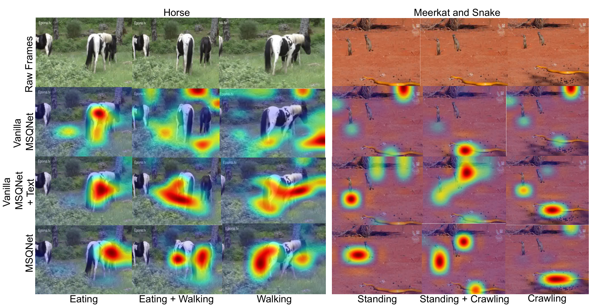
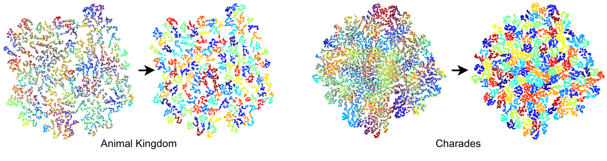
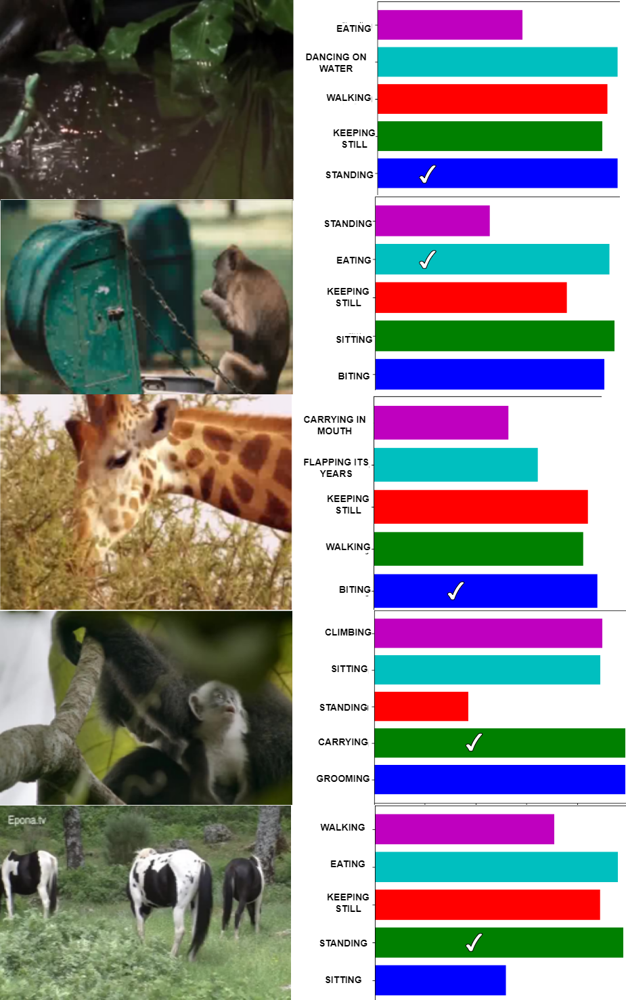
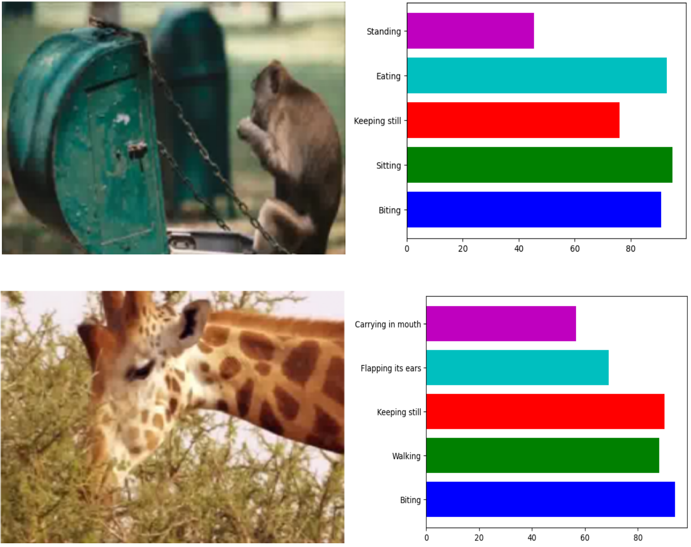

Actor-Agnostic Multi-Label Action Recognition
with Multi-Modal Query (MSQNet)

Figure 1: Large action variation across diverse actors (animals & humans). The same semantic action (e.g., eating, running, preying, grooming) manifests with drastic topological and morphological variations across species. Prior methods rely on actor-specific pose estimators or tailored designs. MSQNet introduces an actor-agnostic vision-language query paradigm that recognizes multi-label actions seamlessly across humans and wildlife without actor pose estimation.
📄 Abstract
Existing action recognition methods are typically actor-specific due to the intrinsic topological and apparent differences among actors. This requires actor-specific pose estimation (e.g., humans vs. animals), leading to cumbersome model design complexity and high maintenance costs. Moreover, they often focus on learning the visual modality alone and single-label classification whilst neglecting other available information sources (e.g., class name text) and the concurrent occurrence of multiple actions.
To overcome these limitations, we propose a new approach called actor-agnostic multimodal multi-label action recognition, which offers a unified solution for various types of actors, including humans and animals. We further formulate a novel Multimodal Semantic Query Network (MSQNet) model in a transformer-based object detection framework (e.g., DETR), characterized by leveraging visual and textual modalities to represent the action classes better. The elimination of actor-specific model designs is a key advantage, as it removes the need for actor pose estimation altogether. Extensive experiments on five publicly available benchmarks show that our MSQNet consistently outperforms the prior arts of actor-specific alternatives on human and animal single- and multi-label action recognition tasks by up to 50%.
Actor-Agnostic Formulation
Eliminates the requirement for species-specific pose estimation models, handling humans and 850+ animal species within a single unified architecture.
Multimodal Semantic Query
Initializes label queries using CLIP text embeddings and dynamically conditions queries on visual frame priors for holistic scene understanding.
SOTA Multi-Label Results
Massive boost on Animal Kingdom from 25.25% to 73.10% mAP (+47.85% absolute gain), plus state-of-the-art results on Charades, Thumos14, and Hockey.
Zero-Shot Generalization
Excels in zero-shot transfer on unseen action categories across 50% and 75% splits, outperforming VideoCOCA, CLIP-Hitchhiker, and BIKE.
🧠 MSQNet Architecture
A DETR-inspired Transformer architecture for vision-language multi-label action classification

Figure 2: Overview of MSQNet. The model consists of three core components: (1) Spatio-temporal Video Encoder extracting divided space-time patch tokens from input frames, (2) Multimodal Query Encoder which fuses class name semantic text embeddings (via CLIP text encoder) and global video embeddings (via CLIP vision encoder), and (3) Multimodal Transformer Decoder that transforms video representations via multi-head cross-attention into action class probabilities via a GroupWise Linear head.
1. Spatio-Temporal Video Encoder
A video sequence \(V \in \mathbb{R}^{T \times 3 \times H \times W}\) is tokenized into spatio-temporal patches. With divided space-time attention (TimeSformer backbone), the encoder models motion dynamics and spatial context independently across layers.
2. Multimodal Query Encoder
Instead of standard random query vectors, label queries \(\mathcal{Q}_l \in \mathbb{R}^{K \times D}\) are initialized with CLIP text representations of class names and concatenated with CLIP video features \(\mathcal{Q}_v\) through a projection layer: \(\mathcal{Q}_0 = \mathbf{W}_\text{que}[\mathcal{Q}_l, \mathcal{Q}_v]\).
3. Multimodal Transformer Decoder
The multimodal queries cross-attend to video spatio-temporal tokens, updating action class queries with localized visual cues. A GroupWise Linear layer computes binary logits for multi-label prediction.
🔍 Qualitative Analysis & Visualizations
Attention rollouts, t-SNE action embeddings, and real-time video prediction demos
Multi-Label Temporal Prediction on Unconstrained Videos
MSQNet dynamically tracks multiple concurrent actions performed across video sequences without needing pre-extracted bounding boxes or actor poses.
Attention Rollout Comparison Across Queries
Comparison of attention heatmaps on Animal Kingdom videos: Raw Frame → Bare Video Backbone (attends diffusely to background) → Uni-modal Prompt (focuses on animal body) → MSQNet (accurately attends to key semantic parts: horse mouth and grass for "Eating", legs for "Walking", and bodies for "Standing" and "Crawling").

t-SNE Embeddings Before vs. After Multimodal Decoder
t-SNE visualization of action representations on Animal Kingdom and Charades. Action classes form significantly tighter, more discriminative semantic clusters after undergoing multimodal query transformation in the transformer decoder.

Top-5 Predicted Classes with Confidence Bars
Predicted class confidences and ground-truth matches on complex multi-label scenarios. MSQNet consistently places the true action classes among the top ranked predictions.


📊 Benchmark Results
Consistent state-of-the-art performance across 5 public benchmarks
1. Fully-Supervised Action Recognition Benchmark
| Dataset | Method | Backbone | Pretrain | Multimodal Query (MMQ) | Metric / Score |
|---|---|---|---|---|---|
| Animal Kingdom | CARe (ICCV '21) | X3D | - | No | 25.25% mAP |
| CARe (ICCV '21) | I3D | - | No | 16.48% mAP | |
| MSQNet (Text-Only) | TimeSformer | K400 | No | 71.63% mAP | |
| MSQNet (Ours) SOTA | TimeSformer | K400 | Yes | 73.10% mAP (+47.85%) | |
| Charades | AFAC (CVPR '21) | Nonlocal-101 | - | No | 44.20% mAP |
| MViT (ICCV '21) | SlowFast | K600 | No | 43.90% mAP | |
| ActionCLIP | ViT-B | - | No | 44.30% mAP | |
| MSQNet (Ours) SOTA | TimeSformer | K400 | Yes | 47.57% mAP | |
| Thumos 14 | SSN | C3D | - | No | 45.42% Acc |
| R-C3D | C3D | - | No | 57.19% Acc | |
| BMN | C3D | S1M | No | 62.12% Acc | |
| MSQNet (Ours) SOTA | TimeSformer | K400 | Yes | 83.16% Acc (+21.04%) | |
| Hockey | EO-SVM | - | - | No | 90.00% Acc |
| AFAC | CSN-152 | - | No | 96.30% Acc | |
| MSQNet (Ours) SOTA | TimeSformer | K400 | Yes | 96.95% Acc | |
| HMDB51 | BIKE (CVPR '23) | ViT | WIT-400M | Yes | 84.31% Acc |
| R2+1D-BERT | R(2+1)D | IG65M | No | 85.10% Acc | |
| VideoMAE V2-g | ViT | K400/K600 | No | 88.10% Acc | |
| MSQNet (Ours) SOTA | TimeSformer | K400 | Yes | 93.25% Acc |
2. Zero-Shot Action Recognition Benchmark
| Split | Method | Thumos 14 (Acc) | Charades (mAP) | HMDB51 (Acc) |
|---|---|---|---|---|
| Reported Prior SoTA | VideoCOCA (2022) | - | 21.10% | 58.70% |
| CLIP-Hitchhiker (2022) | - | 25.80% | - | |
| BIKE (2023) | - | - | 61.40% | |
| 50% Seen Split | Vanilla MSQNet | 49.37% | 15.87% | 45.66% |
| Vanilla MSQNet + Text Init | 53.76% | 18.30% | 51.22% | |
| MSQNet (Full Model) | 63.98% | 30.91% | 59.24% | |
| 75% Seen Split | Vanilla MSQNet | 52.02% | 17.43% | 48.37% |
| Vanilla MSQNet + Text Init | 60.28% | 18.62% | 59.58% | |
| MSQNet (Full Model) | 75.33% | 35.59% | 69.43% |
🚀 Quickstart & Reproducibility
Reproduce all results in 4 simple steps
Clone the repository and install dependencies using pip or Conda:
# 1. Clone repository
git clone https://github.com/mondalanindya/MSQNet.git
cd MSQNet
# 2. Option A: Install via pip
pip install -r requirements.txt
# Option B: Create conda environment
conda env create -f environment.yml
conda activate msqnetSet up datasets under ./datasets or specify via --data_dir <path>:
datasets/
├── AnimalKingdom/
│ └── action_recognition/
│ ├── annotation/
│ │ ├── train_light.csv
│ │ └── val_light.csv
│ └── dataset/
│ └── image/
│ ├── [video_id_001]/
│ │ ├── 00001.jpg
│ │ └── ...
├── Charades/
├── Hockey/
└── THUMOS14/
Generate lighter annotations for Animal Kingdom:
python multi-label-action-main/utility/lighter_annotations.py --input /path/to/train.csv --output /path/to/train_light.csv
Train MSQNet on Animal Kingdom, Charades, or Hockey:
# Single GPU training on Animal Kingdom
python run.py \
--dataset animalkingdom \
--model msqnet \
--data_dir ./datasets \
--batch_size 16 \
--epochs 100 \
--total_length 16 \
--train True
# Multi-GPU Distributed Data Parallel (DDP) training
python multi-label-action-main/dist_main.py \
--dataset animalkingdom \
--model msqnet \
--data_dir ./datasets \
--batch_size 8 \
--total_length 16 \
--distributed TrueEvaluate a trained model checkpoint on the test/validation set:
# Evaluation only (skip training)
python run.py \
--dataset animalkingdom \
--model msqnet \
--data_dir ./datasets \
--checkpoint ./checkpoints/msqnet_msqnet_animalkingdom.pth \
--total_length 16 \
--train FalseVerify your environment dependencies, model components, and dummy forward pass in seconds:
# Run verification test
python verify_environment.py
# Optional: Generate a synthetic toy dataset to test training pipeline end-to-end
python multi-label-action-main/utility/create_dummy_dataset.py --output ./datasets📚 Citation
If you find MSQNet helpful in your research, please consider citing our paper:
@InProceedings{Mondal_2023_ICCV,
author = {Mondal, Anindya and Nag, Sauradip and Prada, Joaquin M and Zhu, Xiatian and Dutta, Anjan},
title = {Actor-Agnostic Multi-Label Action Recognition with Multi-Modal Query},
booktitle = {Proceedings of the IEEE/CVF International Conference on Computer Vision (ICCV) Workshops},
month = {October},
year = {2023},
pages = {784-794}
}